Assignment 2
Contents
- Code for Intergration and Radon Transform are in functions 'myIntegration.m' and 'myRadonTrans.m'.
Some of the images are in their actual scale and hence very small.The same images can be found in the images folder.
1(a)
'Linear' interpolation will be a good choice since the image is piecewise smooth. The step size shouldn't be too large or too small. deltaS = 1 seems to be good choice. A small deltaS takes too much time to compute while a large deltaS will give a coarser integral (not a good approximation).
1(c)
image = phantom(128); t_val = -90:5:90; R1 = myRadonTrans(image,0.5,5,5); R2 = myRadonTrans(image,1,5,5); R3 = myRadonTrans(image,3,5,5); R1_0 = R1(:,1); R1_90 = R1(:,19); R2_0 = R2(:,1); R2_90 = R2(:,19); R3_0 = R3(:,1); R3_90 = R3(:,19); figure() imshow(image,[]); title('Original Image'); figure(); imshow(R1,[]); title('deltaS = 0.5'); figure(); imshow(R2,[]); title('deltaS = 1'); figure(); imshow(R3,[]); title('deltaS = 3'); figure(); plot(t_val,R1_0); title('1D plot with deltaS = 0.5, theta = 0'); xlabel('t') figure(); plot(t_val,R1_90); title('1D plot with deltaS = 0.5, theta = 90'); xlabel('t') figure(); plot(t_val,R2_0); title('1D plot with deltaS = 1, theta = 0'); xlabel('t') figure(); plot(t_val,R2_90); title('1D plot with deltaS = 1, theta = 90'); xlabel('t') figure(); plot(t_val,R3_0); title('1D plot with deltaS = 3, theta = 0'); xlabel('t') figure(); plot(t_val,R3_90); title('1D plot with deltaS = 3, theta = 90'); xlabel('t') figure; R1_90_fft = fftshift(abs(fft((R1_90)))); plot(-18:18,R1_90_fft); xlabel('frequency'); ylabel('Magnitude'); hold on; R1_0_fft = fftshift(abs(fft((R1_0)))); plot(-18:18,R1_0_fft); title('FFT of projection at theta = 0 and 90 deg'); legend('theta = 90','theta = 0'); hold off;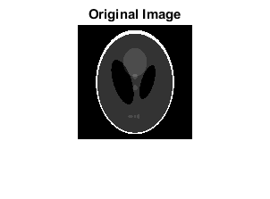 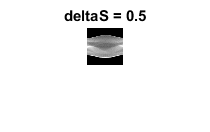 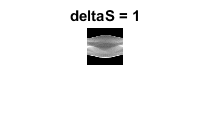 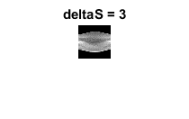 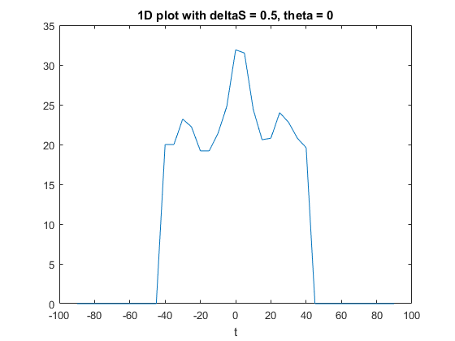 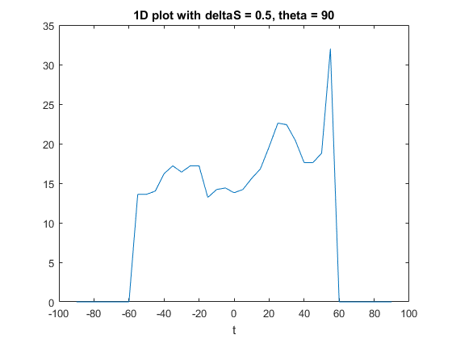 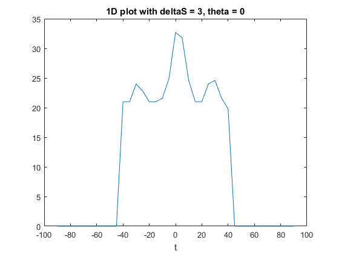 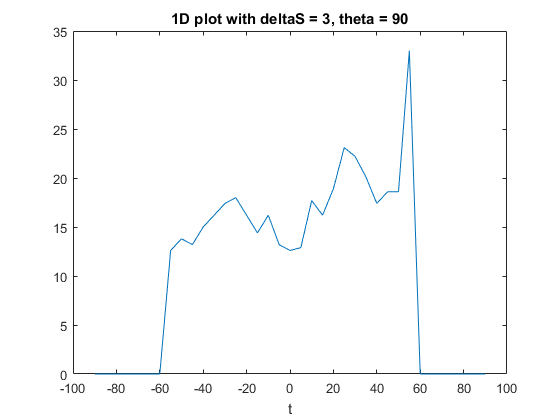 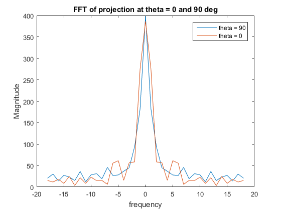
- The 1D plots for theta = 0 are smoother than those for theta = 90 (for a fixed deltaS. This is because in the original image variation of the brighter regions is higher in the y direction than the x direction (as the image is symmetric about the y axis).
- We can also see from the 1-D fft of the projection at theta = 0 and theta = 90. The high frequency content in theta = 0 fft is less than that in theta = 90 fft plot.So we can conclude that theta = 0 deg gives smoother 1-D projection.
- The plots for deltaS = 0.5 are smoother than those for deltaS = 3 as the integration is coarser for higher values of deltaS. Therfore the smoothest 1D plot is for deltaS = 0.5 and theta = 0. The image for deltaS = 0.5 appears the smoothest as the integration will be approximated the best with a smaller deltaS.
1(d)
T1 = myRadonTrans(image,1,1,1); figure(); imshow(T1,[]); title('1d) dT=1,dTheta=1') T2 = myRadonTrans(image,1,3,3); figure(); imshow(T2,[]); title('1d) dT=3,dTheta=3') T3 = myRadonTrans(image,1,5,5); figure(); imshow(T3,[]); title('1d) dT=5,dTheta=5') % I would not prefer to use very large or very small values of the % parameters. From the images shown above we can see that smaller values of % the parameters give much better resolution than the higher values but % the computation time increases. Hence an optimal choice of parameters % would be the one which gives decent resolution and the computation time % is not too large.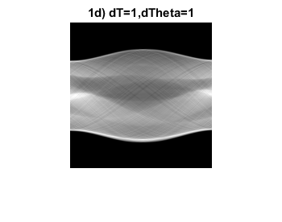 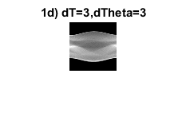 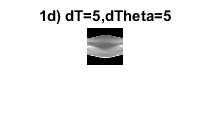
1(e)
The number of pixels in the grid depends on the resolution required and deltaS depends on the size of the pixels. If the number of pixels in the grid is large, then the matrix A (in ART) will be large. Thus, inverting it should take longer. So more number of pixels give better resolution but decrease the computational efficiency. In a CT system (Ax=b), deltaS is related to the values in b. If deltaS is very small then b will contain finer integral values (greater acquisition time) while if deltaS is large then b will contain coarser integral values (smaller acquisiton time). Hence, smaller deltaS will give better reconstruction than a larger deltaS.